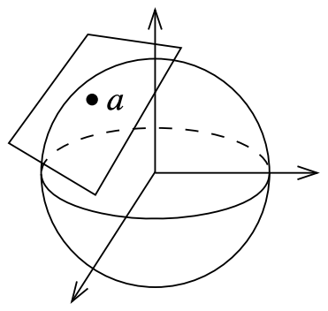

An experiment in combining a formal and an intuitive approach to mathematics. Source on GitHub.
This text is designed to be read on a computer, mobile device or e-reader, not on paper. References are hyperlinks, in this way no numbering is needed like when typesetting PDFs with LaTeX. Explanations intended to help develop the intuition can be toggled and hidden as to not distract the more advanced reader. In this way, terse and dry formalism is combined with lengthy and intuitive explanations in a way that is not possible in a physical book.
Table of contents
Terminology and nomenclature
A list of important symbols etc will not be listed here since this can be found elsewhere. Throughout the text terms will be defined and introduced before use.
A list of important words that are used to convey technical meaning is given below.
auto-: self- (Ancient Greek). Think of “auto-matic”, meaning “self-moving”.
endo-: within- (Ancient Greek). Think of “endo-thermic”, meaning “within-heating” (an endothermic process absorbs heat from its surroundings).
The distinction between auto- and endo- will become clear when discussing automorphisms and automorphisms.
homo-: same (Ancient Greek).
iso-: equal (Ancient Greek).
The distinction between homo- and iso- will become clear when discussing homomorphisms and isomorphisms.
-morphism: relating to form or shape.
mono-: single- or unique-
epi-: on top of-
Set theory
Basic concepts
A set is a collection of elements such that:
- There is no ordering of the elements.
- There are no duplicate elements.
A set containing elements , and is denoted .
Because sets are unordered and free from duplicates, we have that
The meaning of the symbols and related concepts are used in the standard sense and will not be introduced here.
The cardinality of a set is the number of elements in and is denoted . A set with finite cardinality is said to be a finite set.
The power set of a set is the set of all subsets of .
A tuple is an ordered list of elements. An -tuple is a tuple of elements.
A tuple containing elements , and (in this order) is denoted .
Because tuples are ordered and may contain duplicates, we have that
The cartesian product of two sets and is the set of all tuples for all combinations of and .
In set builder notation we write this as
We write to denote a cartesian product of copies of , , of which the elements are on the form .
Let and , then
Relations
Let and be sets. A relation on is a tuple where . Two elements and are said to be related by a relation if , we write and read “ is related to (via (relation) )”.
An endorelation on a set is a relation on .
The converse relation of a relation on is the relation on . Aka. transpose and opposite relation.
Let be sets. An -ary relation on is a subset of .
If it is not specified that a relation is binary or -ary the relation is understood to be binary.
Formally we say that a relation is a tuple where and are sets and is a subset of . Similarly, we say that is an endorelation if is a set and is a subset of .
Two relations and are considered equal if they are equal as tuples. That is, if , and .
Each relation on is an element of and vice versa. For a finite set we have [proof]. Thus, assuming and to be finite, the number of relations on is . Similarly, the number of endorelations on a set is .
Types of relations
Let be a relation on . We then define the following.
Functions
A function is a relation on that is right-unique and left-total. We write to denote . The set is the domain and is the codomain.
Note that the notation is shorthand for saying that is a relation that is right-unique and left-total. We use the notation
- If then .
- If and then (multivariate function).
Since functions are merely a special class of relations, the concept of injective and surjective function is directly inherited from the definitions of injective and surjective for relations.
As a consequence of equality of relations we have that two functions and are considered equal if , and for all .
Let and let , then restricted to is the function f|_{A'}.
A function is sometimes called a map (often with additional structure). More generally a function can be seen as a morphism, the name being motivated by the fact that a function “changes the shape” (morphs) it's domain. The notion of morphisms is explored further in and generalized in category theory.
A function is a thing that produces an output when given an input. For any given function and input the output is always the same. Note that one makes a distinction between a function and a functional expression: Let and be functions with the functional expression , the functions and are formally different functions. However, restricted to is equal to g, written .
Let be a function on (meaning ). Then .
A bijection is a function that is injective and surjective.
A function has an inverse if and only if the converse relation is a function, in which case the converse relation is the inverse function . The existence condition is equivalent to requiring that is bijective.
The number of functions from to is when and are finite sets.
Each can be mapped to different elements. Thus we have possible functions, where the product contains factors, one for each element of .
The set builder notation is a notational convenience for constructing new sets. Given a set and a function with domain we define the expression to be the set of elements for all elements . The colon in the set builder notation is read such that. We read the above defined set as “the set of all elements on the form such that ”.
The set builder notation is naturally extended to multiple sets, we write to mean the set of elements on the form for all combinations of
The set of all functions from to is denoted . The notation is motivated by the fact that the number of functions from to is when and are finite sets.
The set of all functions from to is denoted . The notation is motivated by the fact that the number of functions from to is when and are finite sets.
Sets with order
When we constructed relations we took a set (or a pair of sets) and added some structure to the set, in the form of a relation on the set. This is a very common procedure; taking a set and adding some structure to construct a new mathematical object. We read as “the set is equipped with structure ”. This notion is explored further in abstract algebra.
Here we define some common sets with added structure.
A proset (short for preordered set) is a tuple where is a set and is a preorder; a binary relation satisfying
- reflexivity
- transitivity
A poset (short for partially ordered set) is a tuple where is a set and is a partial order; a binary relation satisfying
- reflexivity
- antisymmetry
- transitivity
A totally ordered set is a tuple where is a set and is a total order; a binary relation satisfying
- connex
- antisymmetry
- transitivity
The above definitions have corresponding strict versions (strict partial order and strict total order), where all all relations are kept except the reflexive ones.
Todo
Abstract algebra
Operations and algebraic structures
A binary operation on a set is such that
A binary operation on a set is such that
The operations addition and multiplication on are associative and commutative. However, subtraction and division are neither.
⋆ = (a, b) -> a - b
a, b, c = 1, 2, 3
println("test of associativity: ", (a ⋆ (b ⋆ c), (a ⋆ b) ⋆ c))
println("test of commutativity: ", (a ⋆ b, b ⋆ a))test of associativity: (2, -4)
test of commutativity: (-1, 1)An element is an identity element if it satisfies both:
- (left identity)
- (right identity)
If a binary operation has an identity element, then it is unique.
Let be a binary operation. Assume that both and are identity elements of . Then,
- , because is a left identity.
- , because is a right identity.
- Since the left hand sides of the above equations are equal, also the right hand sides must be equal, thus .
Let be a binary operation.
- We say that is closed if .
- Let . We say that has closure under , or that is closed on , if .
Let be a binary operation on given by . This operation is not closed on because there exists such that (for example ). On the other hand the binary operation can be restricted to a binary operation on .
An algebraic structure is a tuple where are sets and are binary operations.
If is an algebraic structure, then we write to denote .
A magma is a a tuple where is a set and is a closed binary operation on .
A monoid is a magma such that is associative and has identity.
Let be a magma with identity element . An element is an inverse of if it satisfies both:
- (left inverse)
- (right inverse)
Let be a monoid, let . If has an inverse , then it is unique.
Let be a monoid. Let . Assume that both and are inverse elements of . Then,
- .
- .
- The above together with uniqueness of identity implies .
- Operating with from right gives .
- By associativity .
- By propery of inverse .
The theorem does not hold if is not associative [proof].
A group is a monoid such that each element of has an inverse element under , denoted (additive notation) or (multiplicative notation).
An alternative notation for a group is where is the multiplication function and is the inverse element function, given by:
Let be a group, then is anticommutative if
Let and be two binary operations on a set , we say that and are compatible if
Let be a monoid with identity and let be a set. A (left) monoid action of on is a function such that
- (compatibility of identity).
- and are compatible.
Let be a group, then a group action of on is a monoid action of on . (This makes sense because a group is a monoid).
Let and be two binary operations on a set , we say that is distributive over if both
- (left distributive)
- (right distributive)
An algebraic structure is abelian or commutative if is commutative.
A ring is a 3-tuple where is a set and are binary operations on such that:
- is an abelian group with identity element .
- is a monoid with identity element .
- Multiplication is distributive over addition.
Here is a table showing an overview of algebraic structures. Below we show code for implementing the group axioms for finite groups.
# In the following we let:
# - s be short for set, acting as the domain
# - op or * be a binary operator on s
# - e be an identity for *
# - i be the inverse for *
function hasclosure(s, *)
for x ∈ s, y ∈ s
if x * y ∉ s
println("closure does not hold because $(x) * $(y) = $(x * y) is not in the domain")
return false
end
end
return true
end
ismagma = hasclosure
function isinversefunction(s, *, i, e)
for x ∈ s
if x * i(x) != e || i(x) * x != e
println("inverse does not hold because $(x) * ($(x))^{-1} ≠ e = $(e)")
return false
end
end
return true
end
function isassociative(s, *)
for a ∈ s, b ∈ s, c ∈ s
if (a * b) * c != a * (b * c)
println("associativity does not hold because ($(a) * $(b)) * $(c) ≠ $(a) * ($(b) * $(c)))")
return false
end
end
return true
end
function isidentity(s, *, e)
for a ∈ s
if e * a ≠ a
println("identity does not hold because $(e) * $(a) ≠ $(a)")
return false
elseif a * e ≠ a
println("identity does not hold because $(a) * $(e) ≠ $(a)")
return false
end
end
return true
end
ismonoid(s, *, e) = ismagma(s, *) && isidentity(s, *, e) && isassociative(s, *)
isgroup(s, *, i, e) = ismonoid(s, *, e) && isinversefunction(s, *, i, e)
isring(s, op1, i1, e1, op2, e2) = isgroup(s, op1, i1, e1) && ismonoid(s, op2, e2)
# Code for generating groups
function get_add_group(n)
s = 0:(n-1)
op = (a, b) -> mod(a + b, n)
e = 0
i = a -> mod(-a, n)
return (s, op, i, e)
end
function get_mult_group(n)
get_coprimes(n) = filter(a -> gcd(a, n) == 1, 0:(n-1))
function multinv(s, *, a, e)
# This is a brute force method, it can be done faster with the Extended Euclidean algorithm
for b ∈ s
if a * b == e # The operation * is abelian, so left inverse implies inverse
return b
end
end
println("$(a) has no inverse")
return nothing
end
s = get_coprimes(n)
println("the domain is $(s)")
op = (a, b) -> mod(a * b, n)
e = 1
i = a -> multinv(s, op, a, e)
return (s, op, i, e)
end
println(isgroup(get_add_group(5)...))
println(isgroup(get_mult_group(5)...))A module is a tuple where is a set, is a ring, (module addition) is a function and (scalar multiplication) is function such that:
- (compatibility of identity).
- Scalar multiplication is compatible with ring multiplication.
- is an abelian group.
- .
- .
We say that is a module over the ring . A module should be thought of as a ring action on an abelian group. Indeed, the first two requirements are inherited from monoid action for the monoid , the third requirement confirms that the ring is acting on an abelian group and the last two requirements describe the compatibility of the operations of the ring and the abelian group .
A field is a ring such that is an abelian group with as identity element.
A homomorphism between two algebraic structures is a map between the algebraic structures that preserves the structure.
An isomorphism is a homomorphism whose inverse is a homomorphism.
Let and be modules and let , then is a module homomorphism if :
Module homomorphisms are often (in particular in linear algebra) called linear functions.
Let and be modules and let , then is a multilinear function if restricted to is a module homomorphism for .
If is multilinear with we say that is bilinear.
If is multilinear with for all we say that is a multilinear form.
Let be a multilinear form, then is alternating if it satisfies It follows that if for then .
Linear algebra
Linear algebra can be thought of as a subarea of abstract algebra, dealing with vector spaces, primarily deals the real vector space .
A self-contained description of the prototypical vector space, the real vector space .
Consider the -fold cartesian product of the real numbers . The points in are called vectors. Vector addition is given by component-wise addition; if then and scalar multiplication with is given by
As an exercise, check that the this indeed is a vector space according to the abstract definition.
Implementation of in Julia:
import Base.+
import Base.*
Scalar = Number
# Define a type to represent 3-dimensional vectors
struct Vec3d
x::Scalar
y::Scalar
z::Scalar
end
# Define vector addition
function +(u::Vec3d, v::Vec3d)::Vec3d
return Vec3d(u.x + v.x, u.y + v.y, u.z + v.z)
end
# Define scalar multiplication
function *(k::Scalar, v::Vec3d)
return Vec3d(k * v.x, k * v.y, k * v.z)
end
u = Vec3d(1, 2, 3)
v = Vec3d(1, 1, 1)
k = 5
println("test of vector addition: ", u + v)
println("test of scalar multiplication: ", k * u)test of vector addition: Vec3d(2, 3, 4)
test of scalar multiplication: Vec3d(5, 10, 15)Let , the scalar product of and is given by
Let and let be the angle and , then
Using the law of cosines and then expanding resulting expression proves the theorem.
Note that this result depends on the law of cosines, i.e. requiring that the space has a corresponding Euclidean geometry in which notions of distances and angles are defined. However, in the general setting of a vector space with an inner product, this result can be used to define the notion of angles.
In this sense an inner product defines a geometry of a vector space, endowing it with the notion of distances and angles by defining for vectors and where denotes the length (distance) of and denotes the angle between and .
The inner product generalizes the scalar product.
TODO: https://www.math.usm.edu/perry/old_classes/mat681sp14/norm_and_metric.pdf
A linear combination of the vectors is an expression on the form where .
The vectors are said to be linearly dependent if for scalars , not all zero.
Let be vectors of a vector space . The span of the vectors is the set of all linear combinations of the vectors,
If we say that the vectors span or that the vectors form a spanning set.
A set of vectors of a vector space is a basis for if the vectors are linearly independent and .
A linear map is a module homomorphism between two vector spaces.
Change of basis
Let and be two bases for with coordinate maps where is the standard basis for .
Change of basis for vectors
A vector has coordinates in basis and in basis . Thus we have From this, define the change of basis matrix i.e. the matrix that takes a vector in -coordinates and gives the -coordinate representation. The matrix is easily computed by the following observation, i.e. the :th column of is the coordinates for the new basis vector in the old basis .
Change of basis for matrices
Let be a linear transformation from to itself (i.e. is an endomorphism). The matrix representation for in the two coordinates are With as above, we have
Remark
The similarity transform can be viewed as follows: You give it a coordinate vector in terms of the basis made up of the columns of . Then translates this into the standard basis; then you apply as usual; then you apply and translate it back into the basis . So you can view as performing , but in terms of the basis .
Dirac notation
Let and be two orthonormal bases. We thus have two resolutions of the identity,
Vectors
A vector can be expanded in either basis The components are related by where is the matrix with elements .
Matrices
A matrix can be expanded in either basis The components are related by Where shows that indeed is the inverse of .
Clifford algebra
TODOArithmetic and real-valued functions
Most basic mathematics deals with the field with the intuitive definition of addition and multiplication. Most functions considered are functions from to .
Information theory
Todo
Graph theory
Reference book: Grimaldi, Discrete and combinatorial mathematics, 5th edition, Addison-Wesley. Chapters 11–13.
A (undirected) graph is an ordered pair comprising a set of vertices or nodes together with a set of edges.
A directed graph is an ordered pair comprising a set of vertices together with a set of edges. An edge is an ordered pair of two verticies.
Graphs can be used to model many types of relations.
Analysis
A space is a set equipped with some structure. The elements of the space are called points.
A metric (aka distance function) on a set is a symmetric function such that for all the following holds.
- (identity of indiscernibles)
- (triangle inequality or subadditivity)
A metric space is a set equipped with a metric. We write for a metric space with underlying set and metric .
The real numbers equipped with is a metric space.
Infinite processes and limits
A sequence is one of the following.
- A finite sequence is a function defined on for some .
- An infinite sequence is a function defined on .
If is a sequence we use the notation . Similarly, we say that is a sequence. Note that we can shift the indices, in this way we say that also is a sequence. If we do not care about the domain of the sequence, we simply write .
Let be a metric space. A Cauchy sequence in is a sequence such that
The limit of a sequence is such that If a sequence has a limit, the sequence is said to be convergent, otherwise divergent.
A metric space is complete if all Cauchy sequences converge to an element in the space.
Let and be metric spaces. Let be a function. The limit of as approaches is denoted by The limit satisfies
The definition of a limit of a sequence is recovered from the definition of a limit of a function by choosing and .
A function is continuous at a point if A function is said to be continuous if it is continuous at every point in the domain.
The derivative at of a function is The function is said to be differentiable at .
A function that is said to be differentiable if it is differentiable at every point in the domain, in this case the derivative of is viewed as a function.
Repeatedly differentiating a function times gives rise to the :th derivative, denoted , if it exists.
A function is continuously differentiable the function if differentiable and the derivative is a continuous function.
A function is smooth if it is infinitely continuously differentiable, i.e. if is continuously differentiable for all .
The set of times continuously differentiable functions is denoted . The set of smooth functions is denoted .
Topology
A topology on a set is a collection of subsets of such that:
- (closed under infinite unions)
- (closed under finite intersections)
If is a topology on the pair is a topological space.
A subset of is said to be
- open if ,
- closed if .
The standard topology on is given by specifying that open sets are given by [ref]
A function where and are topological spaces is continuous if is open in for all open sets of .
If in the definition for topological continuity then this definition is equivalent to the standard definition in calculus.
[ref]
Differential geometry
The vector space can be viewed in two ways:
- Space: Elements of are seen as as points in space, whose only property is location, expressed by the coordinates .
- Directions: Elements of are seen as vectors, which are objects that have direction and magnitude, but whose location is irrelevant.
Based on this idea we introduce the following definition.
In this way and are distinct. Think of as the vector space with origin at .
 Consider a manifold embedded in an ambient space, for example . The tangent space to at a point is then simply the subspace of that is orthogonal to the line containing and .
In fact, we can define the tangent space in this way for any manifold that we can embed into , and due to Whitney embedding theorem this is always possible. However, working only with submanifolds of will not be satisfying. The modern approach is to deal with manifolds in an intrinsic manner, without reference to any ambient space. It turns out that the construction of tangent spaces in this context, when there is no ambient space to refer to, is much more involved and farther from the intuitive picture. When talking about intrinsic properties of a manifold we only have the concepts of smooth functions on the manifold and smooth coordinate charts.
A function is called a derivation at if it is linear and satisfies the Leibniz rule for all .
The tangent space to at is the set of all derivations of at . An element of is called a tangent vector at .
Lie theory
TODO
Let be a closed binary operation on a set with identity element . Let be a closed binary operation on . The Jacobi identity is the property of such that
This can be seen as a weaker form of associativity, since if is associative then the Jacobi identity holds.
A Lie algebra is a vector space equipped with an alternating bilinear function called the Lie bracket that satisfies the Jacobi identity.
A Lie group is a group such that is a smooth manifold and group multiplication and group inversion are smooth functions.
Applications
Time series analysis
Let be a time series. The target output at time is then . Let be the output of the network, given for . Define as the prediction error. Then, we define the mean and standard deviation of the last timesteps, Next, let , then we define the anomaly likelihood as where is the cumulative distribution function of the normal distribution. In this way we have, for given threshold , that
Optimal stopping
https://en.wikipedia.org/wiki/Secretary_problemNo information games
0% rejection -> 37%
50/50% rejection -> 25%Full information games
Threshold rule.
58% chance of picking the best.
Let there be candidates. Pick the :th candidate if
k = n : pick (no option)
k = n-1 : pick if s > 0.5
k = n-2 : pick if s > 0.69
k = n-3 : pick if s > 0.78Selling a house
Similar to full information. The goal is not to get the best candidate, but get the most money. Assuming delaying the sale has a cost.
Reinforcement learning
Mostly following the notation of Reinforcement Learning - Sutton, Barto.Basics
The set of states, actions and rewards is denoted , and , respectively.Probability of transition to state with reward , from state and action :
Probability of transition to state , from state taking action :
Expected immediate reward from state after action :
Expected immediate reward on transition from to under action :
where or (but not both) to allow for both episodic and continuing tasks.
A policy is a mapping from states to probabilities of selecting each possible action. An agent acting according to a policy will select action when in state with probability .
Furthermore, we introduce the notation to denote the expected value of given that the agent follows policy .
A partial order of policies is given by if and only if for all .
An optimal policy is such that for all policies and states . We write .
The optimal state- and action-value function are given by
References
- https://drive.google.com/open?id=1opPSz5AZ_kVa1uWOdOiveNiBFiEOHjkG
- http://incompleteideas.net/book/the-book-2nd.html
- https://github.com/ShangtongZhang/reinforcement-learning-an-introduction
Bandits, contextual bandits and general RL
- General RL: Actions affect the next state and reward.
- Contextual bandit: Actions affect only the immediate reward.
- Bandit: Trivial state space .

Miscellaneous
The triangle is an intruder from a higher dimension
Triangles, tetrahedrons and their higher-dimensional counterparts are natural geometric objects. However, they are surprisingly difficult to express in terms of points in space unless you allow a higher-dimensional perspective.
In two dimensions, consider the simplest case, an equilateral triangle with edge length 1. In the plane, we can define this triangle through the location of its vertices , and . Let , and let be in the first quadrant. What are the coordinates of ? With basic trigonometry we see that the distance of from the x-axis is and thus . This is not a very nice number for such a simple object. This is our first hint of the fact that the triangle does not allow itself to be in such a low dimension.
In three dimensions, the counterpart of a triangle is the tetrahedron. Say we position an equilateral tetrahedron with one vertex in the origin similar to the above case. What is the height of the tetrahedron? A surprisingly lengthy argument is required to see that the height is . The simplest Cartesian coordinates are obtained by for a tetrahedron with edge length 2, centered at the origin, and two level edges [ref.]:
In four dimensions it gets event worse, the Cartesian coordinates of the vertices of an origin-centered regular 5-cell having edge length 2 are [ref.]:
Higher-dimensional perspective
Instead of trying to describe a triangle within two dimensions, let's do it in three dimensions. It is very simple, it is the region enclosed by the three points i.e. one vertex per axis. How about the tetrahedron? You guessed it; in four dimensions the tetrahedron is the region enclosed by the four points and so on for higher dimensions.
Generalization
The notion of "region enclosed by" that was used above is made precise by the notion of convex hull. In this way the n-dimensional triangle can be defined as the set of points This leads to the general notion of a simplex.